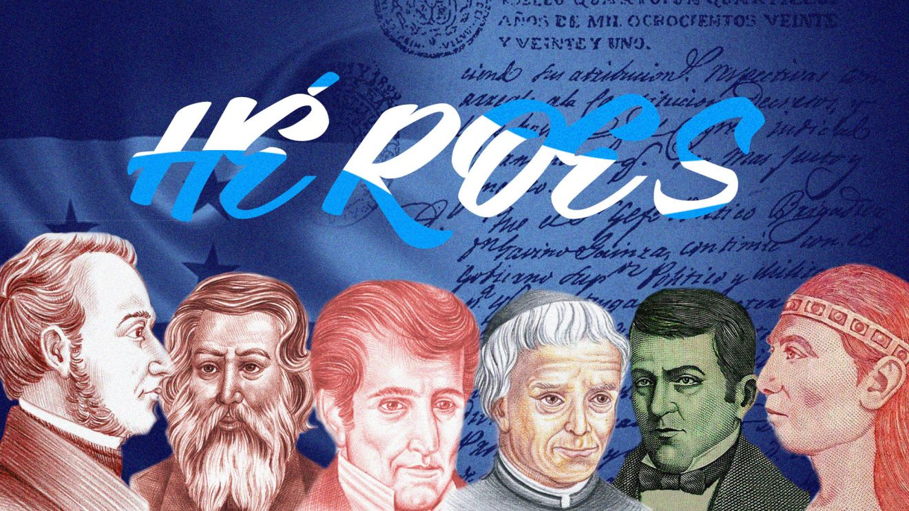
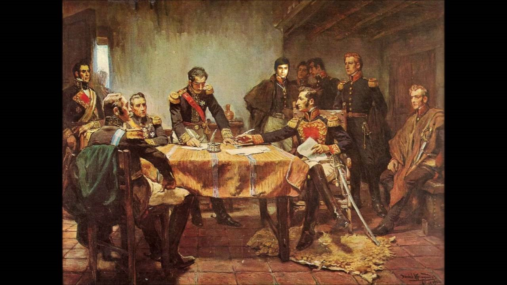
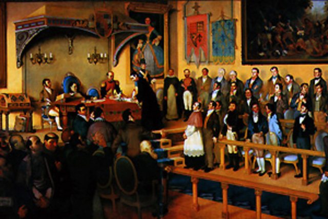
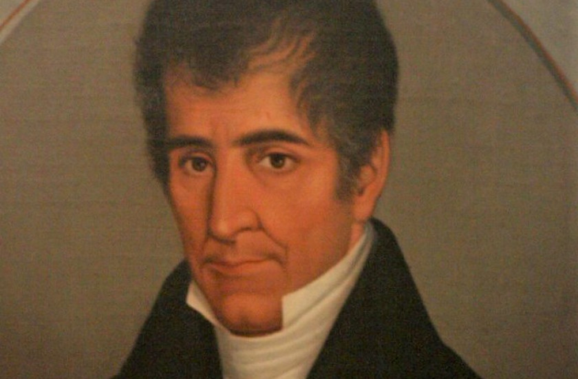

El 2021 es el año del Bicentenario de Independecia
El pueblo hondureño debe sentirse orgulloso de haber logrado hace 200 años la independencia de los españoles.
Una vez que Honduras se declaró independiente de las demás naciones de Centroamérica, se procedió a reorganizar un nuevo estado hondureño.

15 de septiembre
Este año el país cumple los 200 años desde que se firmó el acta de independencia de América Central (Honduras, Guatemala, El Salvador, Nicaragua y Costa Rica). El acta fue firmada en el año de 1821 un 15 de septiembre , la cual trajo como consecuencia la independencia del Gobierno Español.

¿Cómo Honduras obtuvo su independencia?
A diferencia de otros países americanos, exceptuando a Panamá, la independencia centroamericana fue un proceso relativamente pacífico.
La independencia de Honduras giró alrededor de los acontecimientos de las demás provincias de Centroamérica y principalmente de los sucesos de España y Mexico.

Primer movimiento de independencia
El primer movimiento de independencia de Centroamérica sucedió el 5 de noviembre de 1811, con una conspiración inspirada por los curas José Matías Delgado y Fogoaga que intentaron tomar posesión de todas las armas que existían en la casamata de San Salvador. Posterior a ese movimiento, iniciaron más revueltas en Nicaragua y otros países de Centroamérica de 1814 a 1821. Por lo cual se les considera como los promotores de la independencia en Centro América.

¿Quién redactó el acta de independencia?
José Cecilio del Valle fue quien redactó el memorable documento, así mismo, redactó el manifiestó que publicó el Capitán General Gainza sobre este gran suceso de la independencia.
Una vez que Honduras se declaró independiente de las demás naciones de Centroamérica, se procedió a reorganizar un nuevo estado hondureño.
{kind=link}
{kind=link}
{kind=link}